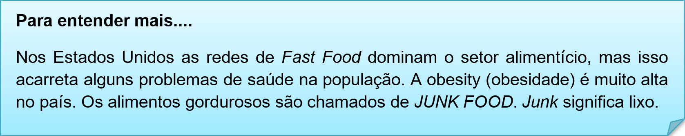
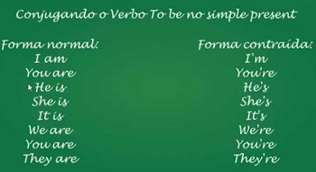

Capítulo 5: Food and Beverage – Comidas e Bebidas
Então bateu uma fome em um país estrangeiro de língua inglesa e no restaurante tem essa placa. What do you do? O que você faz? Sit and eat? Senta e come? Go out? vai embora?
Primeiramente vamos identificar as palavras conhecidas e as cognatas, e vamos identificar o contexto da nossa informação.
Vamos ler as imagens da informação para compor a leitura.
Então vamos ampliar nosso vocabulário alimentar. Observe nosso dicionário ilustrado.
Food and beverage – comidas e bebidas
Você sabia?
Em relação a alimentação, nós usamos duas expressões: I like (eu gosto) e I don’t like (eu não gosto). E tem uma gíria para I don’t like que é: It’s not my cup of tea! Não é minha xícara de chá. Em outras palavras: não gosto.

Assista ao vídeo e veja os problemas de saúde dos americanos
Reconstruindo conhecimentos – Presente simples
Em inglês, o tempo verbal simple present (presente simples) é utilizado para expressar uma verdade universal, ações habituais, situações e fatos atuais, assim como gosto, sentimentos, desejos, opiniões e desejos.
The sky is blue (O céu é azul) – uma verdade universal.
My brother studies in the morning and works in the afternoon. (Meu irmão estuda de manhã e trabalha à tarde) – uma ação habitual.
I go to the store alone every day. (Eu vou à loja sozinha) – uma situação atual.
I want to have dinner with my father today. (Eu quero jantar com meu pai hoje) – um desejo.
O simple present pode ser formado na afirmativa, negativa e interrogativa seguindo as regras de uso explicadas abaixo:
Afirmativa: Formado pelo sujeito + verbo principal, sendo que ao ser conjugado na terceira pessoa do singular precisa do acréscimo das partículas “s”, “ies” ou “es”.
Exemplos:
She drinks a glass of milk every day. (Ela bebe um copo de leite todos os dias)
He leaves his office at six o’clock. (Ele deixa o escritório dele às seis horas)
My brother likes his job very much. (Meu irmão gosta muito do emprego dele)
They want to buy a lot of magazines. (Eles querem comprar muitas revistas)
I work in a drugstore. (Eu trabalho em uma farmácia)
That boy studies a lot. (Aquele garoto estuda muito)
Observação: É interessante verificar cada verbo para saber qual partícula usar na conjugação da terceira pessoa do singular.
Negativa: Ao formar frases negativas no simple present é necessário acrescentar o verbo auxiliar do + not (forma contraída: don’t). E no caso da terceira pessoa do singular utiliza-se does + not (forma contraída: doesn’t).
Exemplos:
She doesn’t (does not) eat fruit for dessert. (Ela não come fruta na sobremesa)
My sister doesn’t (does not) know about the party. (Minha irmã não sabe sobre a festa)
We don’t (do not) want to eat pie now. (Nós não queremos comer torta agora)
I don’t (do not) understand what they say. (Eu não entendo o que eles dizem)
My mother doesn’t (does not) forget your gift. (Minha mãe não esqueceu o seu presente)
You don’t (do not) need to do your test today. (Você não precisa fazer seu teste hoje)
Interrogativa: Ao formar frases interrogativas no simple present é necessário colocar o auxiliar antes do sujeito da frase. No caso da terceira pessoa do singular será utilizado o does.
Exemplos:
Do you take your children to the doctor? (Você leva seus filhos ao médico?)
Do they know about this? (Eles sabem sobre isso?)
Does she go to school by bus? (Ela vai à escola de ônibus?)
What time do you have lunch? (A que horas você almoça?)
Does she prefer to go by car? (Ela prefere ir de carro?)
Do you know my boyfriend? (Você conhece meu namorado?)
Com isso, pode-se concluir que o simple present é utilizado, entre outras situações, para expressar fatos, ações, hábitos cotidianos, desejos e opiniões e deve ser utilizado seguindo algumas regras básicas que formam esse tempo verbal. A atenção deve-se voltar a terceira pessoa do singular, pois conjuga-se de uma forma diferente das demais pessoas do singular.
Aplicando o presente simples ao nosso vocabulário
Os verbos mais utilizados com o vocabulário alimentar são: eat (comer), drink (beber), serve (servir), like (gostar), dislike (não gostar), prefer(preferir)....
I like apple. > Eu gosto de maçã.
I eat beans and egg. > Eu como feijão e ovo.
I prefer Orange than grape. > Eu prefiro laranja que uva.
O que aprendi
• Nesta unidade aprendemos o vocabulário alimentar;
• Aprendemos aplicar o presente simples;
• Ampliamos conhecimentos culturais sobre a alimentação;
• Ampliamos os conhecimentos de verbos relacionados a alimentação.
Praticando
Busque no dicionário ilustrado alimentos e bebidas que podemos classificar como HEALTH (saudável) e UNHEALTH (não-saudável).

Let’s thinking! Vamos pensar. No seu dia você faz no mínimo três refeições: breakfast (café da manhã), lunch (almoço) e dinner (janta). Descreva em inglês os alimentos que você costuma comer.
Breakfast –
Lunch –
Dinner –
Retorne ao texto inicial dessa unidade e responda: o que diz a informação da placa do restaurante?